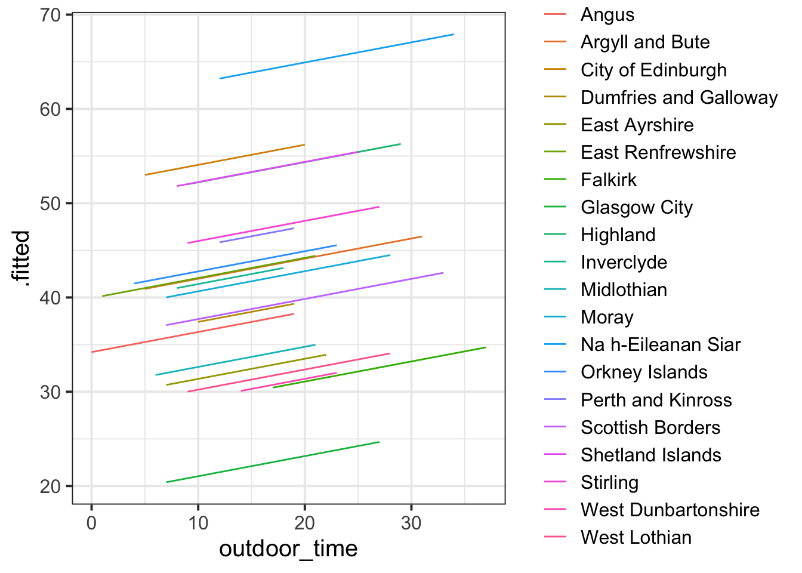
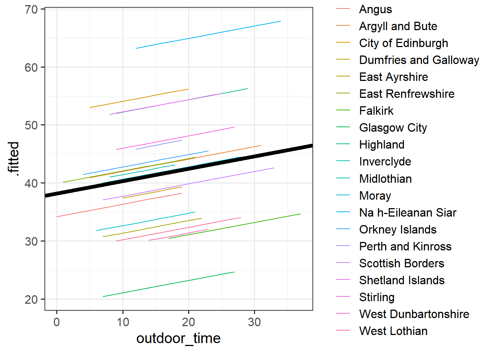
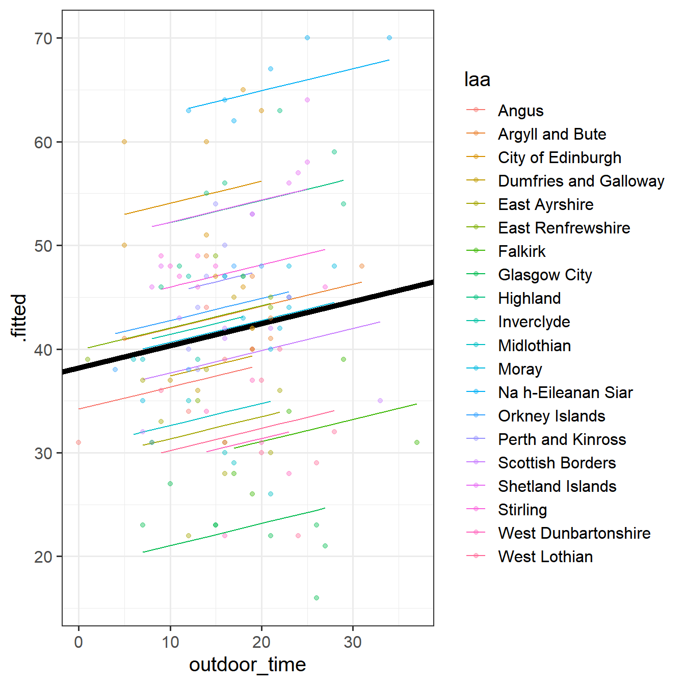
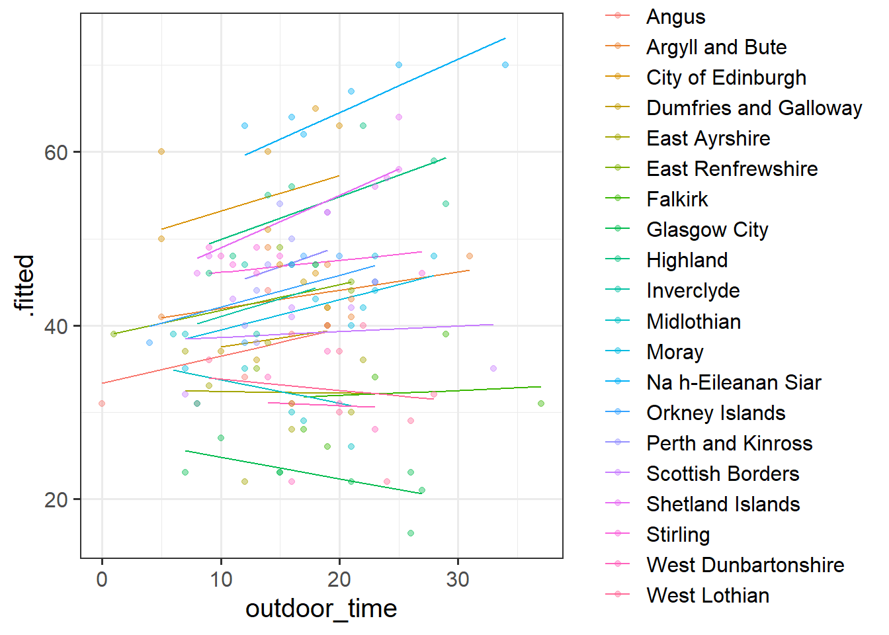
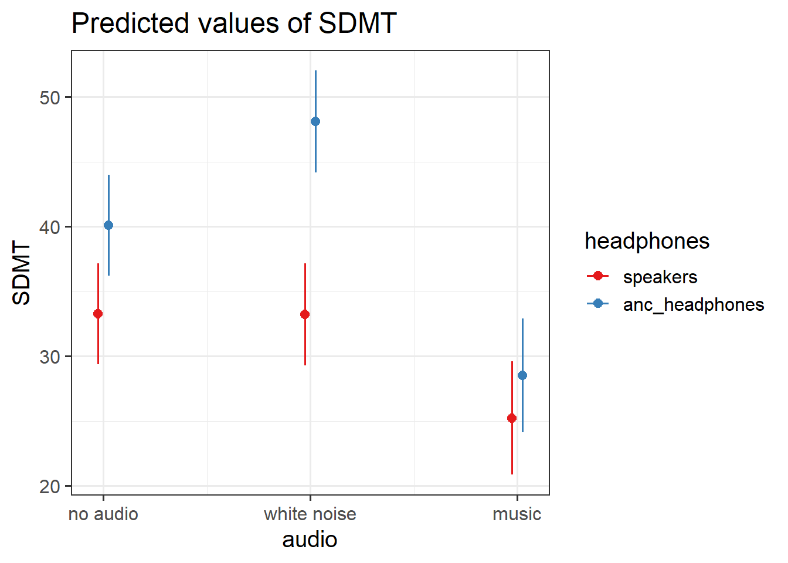
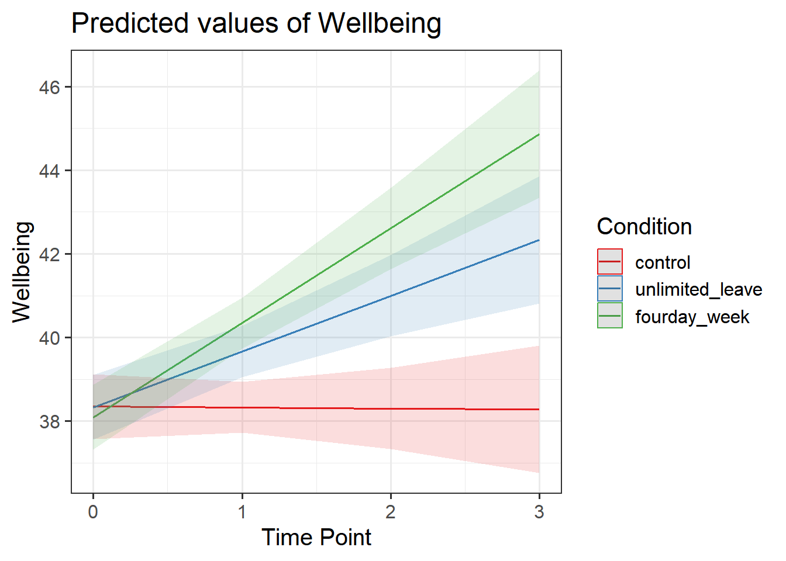

The methods we’re going to learn about in the first five weeks of this course are known by lots of different names: “multilevel models”; “hierarchical linear models”; “mixed-effect models”; “mixed models”; “nested data models”; “random coefficient models”; “random-effects models”; “random parameter models”… and so on).
What the idea boils down to is that model parameters vary at more than one level. This week, we’re going to explore what that means.
Throughout this course, we will tend to use the terms “mixed effect model”, “linear mixed model (LMM)” and “multilevel model (MLM)” interchangeably.
Multilevel Model Notation
Multilevel Models (MLMs) (or “Linear Mixed Models” (LMMs)) take the approach of allowing the groups/clusters to vary around our \(\beta\) estimates.
In the lectures, we saw this as:
\[
\begin{align}
& \text{for observation }j\text{ in group }i \\
\quad \\
& \text{Level 1:} \\
& \color{red}{y_{ij}}\color{black} = \color{blue}{\beta_{0i} \cdot 1 + \beta_{1i} \cdot x_{ij}}\color{black} + \varepsilon_{ij} \\
& \text{Level 2:} \\
& \color{blue}{\beta_{0i}}\color{black} = \gamma_{00} + \color{orange}{\zeta_{0i}} \\
& \color{blue}{\beta_{1i}}\color{black} = \gamma_{10} + \color{orange}{\zeta_{1i}} \\
\quad \\
& \text{Where:} \\
& \gamma_{00}\text{ is the population intercept, and }\color{orange}{\zeta_{0i}}\color{black}\text{ is the deviation of group }i\text{ from }\gamma_{00} \\
& \gamma_{10}\text{ is the population slope, and }\color{orange}{\zeta_{1i}}\color{black}\text{ is the deviation of group }i\text{ from }\gamma_{10} \\
\end{align}
\]
We are now assuming \(\color{orange}{\zeta_0}\), \(\color{orange}{\zeta_1}\), and \(\varepsilon\) to be normally distributed with a mean of 0, and we denote their variances as \(\sigma_{\color{orange}{\zeta_0}}^2\), \(\sigma_{\color{orange}{\zeta_1}}^2\), \(\sigma_\varepsilon^2\) respectively.
The \(\color{orange}{\zeta}\) components also get termed the “random effects” part of the model, Hence names like “random effects model”, etc.
Alternative (“mixed effect”) notation
Many people use the symbol \(u\) in place of \(\zeta\), and in various resources, you are likely to see \(\alpha\) used to denote the intercept instead of \(\beta_0\).
Sometimes, you will see the levels collapsed into one equation, as it might make for more intuitive reading.
This often fits with the name “mixed effects” for these models, as the “effect” of a predictor is a mix of both a fixed and a random part:
In words, this equation is denoting: \[
\begin{align}
\color{red}{\text{outcome}}\color{black} = &(\color{blue}{\text{overall intercept}}\color{black} + \color{orange}{\text{random adjustment to intercept by group}}\color{black}) \cdot 1 \, + \\
&( \color{blue}{\text{overall slope}}\color{black} + \color{orange}{\text{random adjustment to slope by group}} \color{black}) \cdot \text{predictor}\, + \\
& \text{residual} \\
\end{align}
\]
Fitting Multilevel Models: Model Formula
To fit multilevel models, we’re going to use the lme4 package, and specifically the functions lmer() and glmer().1
You will have seen some use of these functions in the lectures. The broad syntax is:
lmer(formula, data = dataframe, REML = logical, control = lmerControl(options) )
We write the first bit of our formula just the same as our old friend the normal linear model y ~ 1 + x + x2 + ..., where y is the name of our outcome variable, 1 is the intercept (which we don’t have to explicitly state as it will be included anyway) and x, x2 etc are the names of our explanatory variables.
With lme4, we now have the addition of random effect terms, specified in parenthesis with the | operator (the vertical line | is often found to the left of the z key on QWERTY keyboards). We use the | operator to separate the parameters (intercept, slope etc.) on the LHS, from the grouping variable(s) on the RHS, by which we would like to model these parameters as varying.
Random Intercepts
Let us suppose that we wish to model our intercept not as a fixed constant, but as varying randomly according to some grouping around a fixed center. We can such a model by allowing the intercept to vary by our grouping variable (g below):
Random Intercepts and Slopes
By extension we can also allow the effect y~x to vary between groups, by including the x on the left hand side of | in the random effects part of the call to lmer().
We can choose whether to estimate our model parameters with ML (maximum likelihood) or REML (restricted maximum likelihood) with the REML argument of lmer():
lmer(formula, data = dataframe, REML = logical, control = lmerControl(options) )
lmer() models are by default fitted with REML, which tends to be better for small samples.
Maximum Likelihood (ML)
Remember back to DAPR2 when we introduced logistic regression, and we briefly discussed Maximum likelihood estimation in an explanation of how models are fitted.
The key idea of maximum likelihood estimation (MLE) is that we (well, the computer) iteratively finds the set of estimates for our model which it considers to best reproduce our observed data. Recall our simple linear regression model of how time spent outdoors (hrs per week) is associated with mental wellbeing: \[
\color{red}{Wellbeing_i} = \color{blue}{\beta_0 \cdot{} 1 + \beta_1 \cdot{} OutdoorTime_{i}} + \varepsilon_i
\] There are values of \(\beta_0\) and \(\beta_1\) and \(\sigma_\varepsilon\) which maximise the probability of observing the data that we have. For linear regression, these we obtained these same values a different way, via minimising the sums of squares. This approach is not possible for more complex models (e.g., logistic) which is why we turn to MLE.
To read about the subtle difference between “likelihood” and “probability”, you can find a short explanation here
If we are estimating just one single parameter (e.g. a mean), then we can imagine the process of maximum likelihood estimation in a one-dimensional world - simply finding the top of the curve:
Figure 1: MLE
However, our typical models estimate a whole bunch of parameters. The simple regression model above is already having to estimate \(\beta_0\), \(\beta_1\) and \(\sigma_\varepsilon\), and our multi-level models have far more! With lots of parameters being estimated and all interacting to influence the likelihood, our nice curved line becomes a complex surface (see Left panel of Figure 2). So what we (our computers) need to do is find the maximum, but avoid local maxima and singularities (see Figure 3).
Figure 2: MLE for a more complex model
Restricted Maximum Likelihood (REML)
When it comes to estimating multilevel models, maximum likelihood will consider the fixed effects as fixed, known values when it estimates the variance components (the random effect variances). This leads to biased estimates of the variance components, specifically biasing them toward being too small, especially if \(n_\textrm{clusters} - n_\textrm{level 2 predictors} - 1 < 50\). This leads to the standard errors of the fixed effects being too small, thereby inflating our type 1 error rate (i.e. greater chance of incorrectly rejecting our null hypothesis).
Restricted Maximum Likelihood (REML) is a method that separates the estimation of fixed and random parts of the model, leading to unbiased estimates of the variance components.
Fitting Multilevel Models: Model Convergence
Alongside the ML/REML choice for model estimation, we have some control over the underlying algorithm that is used to move around/search the likelihood surface for our estimates. We’ll learn more about this next week.
lmer(formula, data = dataframe, REML = logical, control = lmerControl(options) )
For large datasets and/or complex models (lots of random-effects terms), it is quite common to get a convergence warning. There are lots of different ways to deal with these (to try to rule out hypotheses about what is causing them).
For the time being, if lmer() gives you convergence errors, you could try changing the optimizer. Bobyqa is a good one: add control = lmerControl(optimizer = "bobyqa") when you run your model.
lmer(y ~1+ x1 + ... + (1+ .... | g), data = df, control =lmerControl(optimizer ="bobyqa"))
What is a convergence warning??
There are different techniques for maximum likelihood estimation, which we apply by using different ‘optimisers’. Technical problems to do with model convergence and ‘singular fit’ come into play when the optimiser we are using either can’t find a suitable maximum, or gets stuck in a singularity (think of it like a black hole of likelihood, which signifies that there is not enough variation in our data to construct such a complex model).
Figure 3: local/global maxima and singularities
Exercises: Cross-Sectional
Data: Wellbeing Across Scotland
Recall our dataset from last week, in which we used linear regression to determine how outdoor time (hours per week) is associated with wellbeing in different local authority areas (LAAs) of Scotland. We have data from various LAAs, from Glasgow City, to the Highlands.
Self report estimated number of hours per week spent outdoors
wellbeing
Warwick-Edinburgh Mental Wellbeing Scale (WEMWBS), a self-report measure of mental health and well-being. The scale is scored by summing responses to each item, with items answered on a 1 to 5 Likert scale. The minimum scale score is 14 and the maximum is 70.
density
LAA Population Density (people per square km)
Question 1
Using lmer() from the lme4 package, fit a model predict wellbeing from outdoor_time, with by-LAA random intercepts.
Pass the model to summary() to see the output.
library(lme4)ri_model <-lmer(wellbeing ~ outdoor_time + (1| laa), data = scotmw)summary(ri_model)
Linear mixed model fit by REML ['lmerMod']
Formula: wellbeing ~ outdoor_time + (1 | laa)
Data: scotmw
REML criterion at convergence: 866.6
Scaled residuals:
Min 1Q Median 3Q Max
-2.2218 -0.7192 0.1217 0.6395 1.8287
Random effects:
Groups Name Variance Std.Dev.
laa (Intercept) 106.23 10.307
Residual 25.46 5.046
Number of obs: 132, groups: laa, 20
Fixed effects:
Estimate Std. Error t value
(Intercept) 38.18979 2.64778 14.42
outdoor_time 0.21349 0.07236 2.95
Correlation of Fixed Effects:
(Intr)
outdoor_tim -0.463
Question 2
Sometimes the easiest way to start understanding your model is to visualise it.
Load the package broom.mixed. Along with some handy functions tidy() and glance() which give us the information we see in summary(), there is a handy function called augment() which returns us the data in the model plus the fitted values, residuals, hat values, Cook’s D etc..
broom.mixed
the broom.mixed package has some useful functions (just like those in the broom package for lm()):
library(broom.mixed)glance(model) # for overall model stats
Add to the code below to plot the model fitted values, and color them according to LAA. (you will need to edit ri_model to be whatever name you assigned to your model).
augment(ri_model) %>%ggplot(aes(x = outdoor_time, y = ......
augment(ri_model) %>%ggplot(aes(x = outdoor_time, y = .fitted, col = laa)) +geom_line()

Question 3
We have just fitted the model: \[
\begin{align}
& \text{For person } j \text{ in LAA } i \\
& \color{red}{\textrm{Wellbeing}_{ij}}\color{black} = \color{blue}{\beta_{0i} \cdot 1 + \beta_{1} \cdot \textrm{Outdoor Time}_{ij}}\color{black} + \varepsilon_{ij} \\
& \color{blue}{\beta_{0i}}\color{black} = \gamma_{00} + \color{orange}{\zeta_{0i}} \\
\end{align}
\]
For our estimates of \(\gamma_{00}\) (the fixed value around which LAA intercepts vary) and \(\beta_1\) (the fixed estimate of the relationship between wellbeing and outdoor time), we can use fixef().
fixef(ri_model)
(Intercept) outdoor_time
38.189795 0.213492
Can you add to the plot in the previous question, a thick black line with the intercept and slope given by fixef()?
Hints
Hint:geom_abline()
augment(ri_model) %>%ggplot(aes(x = outdoor_time, y = .fitted, col = laa)) +geom_line() +geom_abline(intercept =fixef(ri_model)[1], slope =fixef(ri_model)[2], lwd =2)

Question 4
By now, you should have a plot which looks more or less like the left-hand figure below (we have added on the raw data - the points).

Figure 4: Model fitted values
Figure 5: Summary model output lmer(wellbeing~1 + outdoor_time + (1|laa), data = scotmw)
Match the coloured sections Yellow (W), Red (X), Blue (Y), and Orange (Z) in Figure 5 to the descriptions below of Figure 4 A through D.
where the black line cuts the y axis
the standard deviation of the distances from all the individual LAA lines to the black line
the slope of the black line
the standard deviation of the distances from all the individual observations to the line for the LAA to which it belongs.
A = Blue (Y)
B = Yellow (W)
C = Orange (Z)
D = Red (X)
Question 5
Match the colours sections and descriptions from the previous question, to the mathematical terms in the model equation:
B = Yellow (W) = \(\sigma_{\color{orange}{\zeta_{0}}}\)
C = Orange (Z) = \(\beta_{1}\)
D = Red (X) = \(\sigma_{\varepsilon}\)
Question 6
Fit a model which allows also (along with the intercept) the effect of outdoor_time to vary by-LAA.
Then, using augment() again, plot the model fitted values. What do you think you will see?
Does it look like this model better represents the individual LAAs? Take a look at, for instance, Glasgow City.
rs_model <-lmer(wellbeing ~1+ outdoor_time + (1+ outdoor_time | laa), data = scotmw)augment(rs_model) %>%ggplot(aes(x = outdoor_time, y = .fitted, col = laa)) +geom_line() +geom_point(aes(y=wellbeing), alpha=.4)

Exercises: Repeated Measures
While the wellbeing example considers the groupings or ‘clusters’ of different LAAs, a more common grouping in psychological research is that of several observations belonging to the same individual. One obvious benefit of this is that we can collect many more observations with fewer participants but control for the resulting dependency of observations.
Data: REPLICATION Audio/SDMT study
Recall the data from the previous week, from an experiment in which executive functioning was measured (via the SDMT) for people when listening to different types of audio, either via normal speakers or via noise-cancelling headphones.
This week, we have data from a replication of that study, in which the researchers managed to recruit 30 participants. Unfortunately, some participants did not complete all the trials, so we have an unbalanced design. The data is available at https://uoepsy.github.io/data/ef_replication.csv.
variable
description
PID
Participant ID
trial_n
Trial Number (1-15)
audio
Audio heard during the test ('no_audio', 'white_noise','music')
headphones
Whether the participant listened via speakers in the room or via noise cancelling headphones
SDMT
Symbol Digit Modalities Test (SDMT) score
Question 7
How many participants are there in the data?
How many have complete data (15 trials)?
What is the average number of trials that participants completed? What is the minimum?
Does every participant have some data for each type of audio?
Here are the counts of trials for each participant. We can see that no participant completed all 15 trials. Everyone completed at least 10, and the median was 12.
efrep %>%count(PID) %>%summary()
PID n
Length:30 Min. :10
Class :character 1st Qu.:11
Mode :character Median :12
Mean :12
3rd Qu.:13
Max. :14
We can add in audio to our counting to see that everyone has data from \(\geq 2\) trials for a given audio type.
efrep %>%count(PID,audio) %>%summary()
PID audio n
Length:90 no_audio :30 Min. :2
Class :character white_noise:30 1st Qu.:4
Mode :character music :30 Median :4
Mean :4
3rd Qu.:5
Max. :5
Question 8
The model below is sometimes referred to as the “null model” (or “intercept only model”). The grouping structure of the data is specified in the model, but nothing more.
nullmod <-lmer(SDMT ~1+ (1| PID), data = efrep)
Fit the model and examine the summary.
How much of the variation in SDMT scores is down to participant grouping?
nullmod <-lmer(SDMT ~1+ (1| PID), data = efrep)summary(nullmod)
Linear mixed model fit by REML ['lmerMod']
Formula: SDMT ~ 1 + (1 | PID)
Data: efrep
REML criterion at convergence: 2664.6
Scaled residuals:
Min 1Q Median 3Q Max
-2.58680 -0.68262 0.03241 0.65701 2.26736
Random effects:
Groups Name Variance Std.Dev.
PID (Intercept) 62.02 7.875
Residual 79.82 8.934
Number of obs: 360, groups: PID, 30
Fixed effects:
Estimate Std. Error t value
(Intercept) 34.789 1.514 22.98
\(\frac{62.02}{62.02+79.82} = 0.44\), or 44% of the variance in SDMT scores is explained by participant differences.
We can check this matches (closely enough) with the ICCbare() function from last week:
library(ICC)ICCbare(x = PID, y = SDMT, data = efrep)
[1] 0.4363587
Question 9
Set the reference levels of the audio and headphones variables to “no audio” and “speakers” respectively.
Fit a multilevel model to address the research question below.
How do different types of audio interfere with executive functioning, and does this interference differ depending upon whether or not noise-cancelling headphones are used?
things to think about:
what is our outcome variable of interest?
what are our predictor variables (and interactions?) that we are interested in?
these should be in the fixed effects part.
what is the clustering?
this should be the random effects (1 | cluster) part
does audio type (audio) vary within clusters, or between?
if so, we might be able to fit a random slope of audio | cluster. if not, then it doesn’t make sense to do so.
does delivery mode (headphones) vary within clusters, or between? - if so, we might be able to fit a random slope of headphones | cluster. if not, then it doesn’t make sense to do so.
If you get an error about model convergence, consider changing the optimiser (see the “model estimation” box)
Linear mixed model fit by REML ['lmerMod']
Formula: SDMT ~ audio * headphones + (1 + audio | PID)
Data: efrep
Control: lmerControl(optimizer = "bobyqa")
REML criterion at convergence: 2376.2
Scaled residuals:
Min 1Q Median 3Q Max
-2.34520 -0.62861 0.05762 0.60807 2.21250
Random effects:
Groups Name Variance Std.Dev. Corr
PID (Intercept) 51.17 7.153
audiowhite_noise 15.22 3.901 -0.25
audiomusic 13.69 3.700 0.03 -0.16
Residual 31.49 5.612
Number of obs: 360, groups: PID, 30
Fixed effects:
Estimate Std. Error t value
(Intercept) 33.25800 1.98899 16.721
audiowhite_noise -0.03044 1.44501 -0.021
audiomusic -8.01731 1.41148 -5.680
headphonesanc_headphones 6.85313 2.81173 2.437
audiowhite_noise:headphonesanc_headphones 8.02458 2.04497 3.924
audiomusic:headphonesanc_headphones -3.58747 2.00128 -1.793
Correlation of Fixed Effects:
(Intr) adwht_ audmsc hdphn_ adw_:_
audiowht_ns -0.352
audiomusic -0.174 0.192
hdphnsnc_hd -0.707 0.249 0.123
adwht_ns:h_ 0.249 -0.707 -0.136 -0.351
admsc:hdph_ 0.123 -0.135 -0.705 -0.173 0.191
Question 10
We now have a model, but we don’t have any p-values, confidence intervals, or inferential criteria on which to draw conclusions.
Pick a method of your choosing and perform a test of/provide an interval for the relevant effect of interest.
Provide a brief write-up of the results along with a visualisation.
Options
As with normal regression, we have two main ways in which we can conduct inference. We can focus on our coefficients, or we can compare models.
There are a whole load of different methods available for drawing inferences from multilevel models, which means it can be a bit of a never-ending rabbit hole. For the purposes of this course, we’ll limit ourselves to these two:
model comparison (different fixed effects, same random effects)
library(pbkrtest) KRmodcomp(model1,model0)
anova(model0,model)
fit models with REML=TRUE. good option for small samples
fit models with REML=FALSE. needs large N at both levels (40+)
In this case we have \(n=30\) participants (our level 2 sample size), and each participant has at most 15 observations (and some have fewer). These numbers are possibly a bit small for standard likelihood based methods. We would be better off using models fitted with REML because they will provide more accurate estimates of the variance components (the (1 + audio | PID) bit), and so better estimates of the standard errors for our fixed effects.
The easiest option here is to use the parameters package:
And if we want to go down the model comparison route, we just need to isolate the relevant part(s) of the model that we are interested in. For instance, to test the interaction:
SDMT scores were modelled using linear mixed effects regression, with fixed effects of audio-type (no audio/white noise/music, treatment coded with no audio as the reference level), audio delivery (speakers/ANC-headphones, treatment coded with speakers as the reference level) and their interaction. Participant-level random intercepts and random slopes of audio-type were also included. The model was fitted using the lme4 package in R, and estimated with restricted estimation maximum likelihood (REML) using the bobyqa optimizer. Denominator degrees of freedom for all tests were approximated using the Kenward-Rogers method.
Inclusion of the interaction between headphones and audio-type was found to improve model fit (\(F(2, 26.8) = 10.64, p < .001\)), suggesting that the interference of different types of audio on executive functioning is dependent upon whether the audio is presented through ANC-headphones or through speakers.
Participants not wearing headphones and presented with no audio scored on average 33.26 on the SDMT. Listening to music via speakers was associated with lower scores (\(\beta = -8.02, SE = 1.41, t(27.42)=-5.67, p <0.001\)) compared to no audio. White noise played via speakers was not associated with a difference in performance on the SDMT compared to no audio.
Without any audio playing, wearing ANC-headphones was associated with higher SDMT scores compared to no headphones (\(\beta = 6.85, SE = 2.81, t(27.94)=2.44, p =0.021\)). This difference between headphones and speakers was also evident when listening to white-noise (\(\beta = 8.02, SE = 2.05, t(27.73)=3.92, p <0.001\)). The apparent detrimental influence of music was not found to differ depending on whether headphones were worn (\(\beta = -3.59, p =0.084\)).
These results suggest that while music appears to interfere with executive functioning (resulting in lower SDMT scores) regardless of whether it is heard through headphones or speakers, listening to white noise may actually improve executive functioning, but only when presented via headphones. Furthermore, there appears to be benefits for executive functioning from wearing ANC-headphones even when not-listening to audio, perhaps due to the noise cancellation. The pattern of findings are displayed in Figure 6.
library(sjPlot)plot_model(sdmt_mod, type="int")

Figure 6: Interaction between the type (no audio/white noise/music) and the delivery (speakers/ANC headphones) on executive functioning task (SDMT)
Exercises: Longitudinal
Another very crucial advantage of these methods is that we can use them to study how people change over time.
Data: Wellbeing in Work
The “Wellbeing in Work” dataset contains information on employees who were randomly assigned to one of three employment conditions:
control: No change to employment. Employees continue at 5 days a week, with standard allocated annual leave quota.
unlimited_leave : Employees were given no limit to their annual leave, but were still expected to meet required targets as specified in their job description.
fourday_week: Employees worked a 4 day week for no decrease in pay, and were still expected to meet required targets as specified in their job description.
Wellbeing was was assessed at baseline (start of maintenance), 12 months post, 24 months post, and 36 months post.
The researchers had two main questions:
Q1): Overall, did the participants’ wellbeing stay the same or did it change?
Q2): Did the employment condition groups differ in the how wellbeing changed over the assessment period?
After running the code above you will find the data in an object called wellbeingwork3 in your environment.
Question 11
Q1): Overall, did the participants’ wellbeing stay the same or did it change?
Each of our participants have measurements at 4 assessments. We need to think about what this means for the random effects that we will include in our model (our random effect structure). Would we like our models to accommodate individuals to vary in their overall wellbeing, to vary in how they change in wellbeing over the course of the assessment period, or both?
To investigate whether wellbeing changed over the course of the assessments, or whether it stayed the same, we can fit and compare 2 models:
A null model.
A model with wellbeing predicted by time point.
And we can then compare them in terms of model fit (as mentioned above, there are lots of different ways we might do this).
Our sample size here (180 participants, each with 4 observations) is reasonably large given the relative simplicity of our model. We might consider running a straightforward Likelihood Ratio Test using anova(restricted_model, full_model) to compare our two models (in which case we should fit them with REML=FALSE)
Hints
Remember, we shouldn’t use likelihood ratio tests to compare models with different random effect structures.
(For now, don’t worry too much about “singular fits”. We’ll talk more about how we might deal with them next week!)
Linear mixed model fit by maximum likelihood ['lmerMod']
Formula: Wellbeing ~ 1 + (1 | ID)
Data: wellbeingwork3
AIC BIC logLik deviance df.resid
4400.8 4414.6 -2197.4 4394.8 717
Scaled residuals:
Min 1Q Median 3Q Max
-2.5224 -0.6067 -0.0426 0.5918 3.6020
Random effects:
Groups Name Variance Std.Dev.
ID (Intercept) 4.762 2.182
Residual 22.479 4.741
Number of obs: 720, groups: ID, 180
Fixed effects:
Estimate Std. Error t value
(Intercept) 40.0431 0.2402 166.7
We can see the 4.76 / (4.76 + 22.48), or 0.17 of the total variance in wellbeing is attributable to participant-level variation.
Now lets suppose we want to compare this null model with a model with an effect of TimePoint (to assess whether there is overall change over time). Which model should we compare m.null to?
A comparison between m.null and modA will not be assessing the influence of only the fixed effect of TimePoint (remember, we shouldn’t compare models that differ in both fixed and random effects)
However, modB doesn’t include our by-participant random effects of timepoint, so comparing this to m.null is potentially going to mis-attribute random deviations in participants’ change to being an overall effect of timepoint.
If we want to conduct a model comparison to isolate the average change over time (a fixed effect of TimePoint), we might want to compare these two models:
The first of these models is a bit weird to think about - how can we have by-participant random deviations of TimePoint if we don’t have a fixed effect of TimePoint? That makes very little sense. What it is actually fitting is a model where the average participant has no effect of TimePoint. So the fixed effect is 0.
Q: Did the employment condition groups differ in the how wellbeing changed over the assessment period?
Hints
It helps to break it down. There are two questions here:
do groups differ overall?
do groups differ over time?
We can begin to see that we’re asking two questions about the Condition variable here: “is there an effect of Condition?” and “Is there an interaction between TimePoint and Condition?”.
Try fitting two more models which incrementally build these levels of complexity, and compare them (perhaps to one another, perhaps to models from the previous question - think about what each comparison is testing!)
We’re going to compare each model to the previous one to examine the improvement in fit due to inclusion of each parameter. We could do this quickly with
Conditions differed overall in wellbeing change \(\chi^2(2)=11.39, p = .003\)
Conditions differed in change over assessment period \(\chi^2(2)=23.71, p < .001\)
Question 13
Visualise the model estimated change in wellbeing over time for each Condition.
Hints
There are lots of ways you can visualise the model, try a couple:
Using the effects package, this might help: as.data.frame(effect("TimePoint*Condition", model))
We can also use sjPlot, as we have seen in DAPR2
Using the effect() function (and then adding the means and SEs from the original data):
Additionally, sjPlot can give us the model fitted values, but it’s trickier to add on the observed means. We can add the raw data using show.data=TRUE, but that will make it a bit messier
library(sjPlot)plot_model(m.full, type="int")

Question 14
Examine the parameter estimates and interpret them (i.e., what does each parameter represent?
Can you match them with parts of the plot obtained from plot_model(m.full, type="int")?
Hints
We can get the fixed effects using fixef(model), and we can also use tidy(model) from the broom.mixed package, and similar to lm models in DAPR2, we can pull out the bit of the summary() using summary(model)$coefficients.
(Intercept) ==> Wellbeing at baseline in ‘control’ group.
TimePoint ==> Slope of welleing change in ‘control’ group.
Conditionunlimited_leave ==> baseline wellbeing difference from ‘unlimited_leave’ group relative to ‘control’ group.
Conditionfourday_week ==> baseline wellbeing difference from ‘fourday_week’ group relative to ‘control’ group.
TimePoint:Conditionunlimited_leave ==> slope of wellbeing change in ‘unlimited_leave’ group relative to ‘control’ group.
TimePoint:Conditionfourday_week ==> slope of wellbeing change in ‘fourday_week’ group relative to ‘control’ group.
plot_model(m.full, type="int")
Figure 7: Well-being over time, for employees working in different conditions
(Intercept) ==> the height of the red line at timepoint 0.
TimePoint ==> slope of the red line (basically flat).
Conditionunlimited_leave ==> the difference at timepoint 0 in height of the blue line from height of the red line (basically 0, but blue line starts ever so slightly below the red).
Conditionfourday_week ==> the difference at timepoint 0 in height of the green line from height of the red line (also very small, but it is a bit further below the red than the blue is).
TimePoint:Conditionunlimited_leave ==> the difference from slope of red line to slope of blue line. i.e. while the red line goes -0.023 for every 1 across, the blue line goes \(-0.023+1.357=1.334\) up for every 1 across.
TimePoint:Conditionfourday_week ==> difference from slope of red line to slope of green line. i.e. while the red line goes -0.023 for every 1 across, the green line goes \(-0.023+2.282=2.259\) up for every 1 across.
Compared to the control group, wellbeing increased by 1.36 points/year more for employees with unlimited leave, and by 2.28 points/year for employees on the 4 day week.
Footnotes
“(g)lmer” here stands for “(generalised) linear mixed effects regression”.↩︎